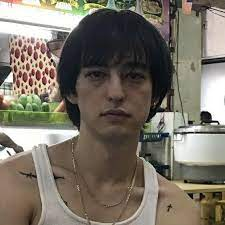

Top 1: Mora
Me gusta su forma de escribir, y podría escucharlo 24/7
Top 2: Bad Bunny
No me gustan sus canciones viejas, cuando hacía trap y hablaba de cosas indecentes, ahora es mejor y soy un gran fan.
Top 3: The Weeknd
Su estilo es original y es una referencia de muchos cantantes, sus letras son versátiles y pegadizas.
Top 4: PARIS The Prince
Es un cantante muy poco reconocido, tiene 3k de seguidores en YouTube pero sus canciones son hermosas y profundas.
Top 5: Jbalvin
Su estilo de hacer reggaeton me encanta, no es como los demás y tiene álbumes que todas sus canciones son buenas.
Top 6: Rauw Alejandro
A pesar de estar en este top, me gusta más que algunos otros pero pues me sé menos canciones, sin embargo, canto a todo pulmón y disfruto sus canciones, tiene un buen estilo futurista.
Top 7: Feid
La verdad este top está difícil ya que todos estos son mis favoritos en general, no tienen un lugar en específico, ya me arrepentí JAJAJAJA, este artista tiene canciones muy pegadizas.
Top 8: Cigarettes After Sex (CAS)
Son una banda, no un artista individual, sus canciones son muy tristes y románticas a la vez al punto de que uno ya no sabe si disfrutarlas o ponerse a llorar, son arte.
Top 9: Tory Lanez
Es un cantante igual de poco reconocido que PARIS The Prince pero sus canciones son buenísimas, tiene un aire a The Weeknd, su estilo de POP es muy bueno.

Top 10: Joji
Antes era muy fan, aún me gustan sus canciones pero son muy tristes y pues me pasé al reggaeton para no seguir triste JAJAJA.
